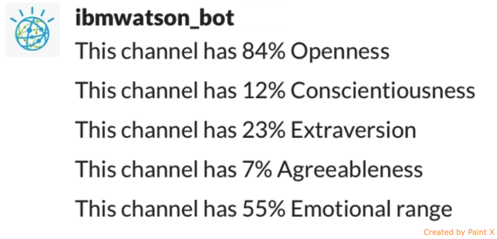

Learn how to build a Glip Bot with IBM Watson and Botkit using node.js
Start TutorialGlip provides a single, unified team workspace that empowers you to work, communicate, and collaberate faster and more effectively.
In this tutorial, we will look at how to build bots to enhances the productivity even more than ever before usign IBM Watson.
Create an application defined in the RingCentral Developer Portal that has the following properties:
An IBM Blumix account.
As a first step, clone the sample application from Github.
git clone https://github.com/pkvenu/botkit-watson-bot.git
Create a copy of the .env.template file and rename it to .env
mv .env.template .env
The first file we'll look at is config.json. This contains high-level configuration information about your tutorial. This JSON file contains several properties you can declare about your tutorial:
GLIP_SERVER: Developer account - Sandbox or ProductionGLIP_APPKEY: Developer Account App Key.GLIP_APPSECRET: Developer Account App Secret.GLIP_USERNAME: Glip UsernameGLIP_PASSWORD: Glip PasswordWATSON_USERNAME: IBM Blumix UsernameWATSON_PASSWORD: IBM Blumix PasswordWATSON_URL: Personality Insight URLWATSON_VERSION_DATE: Personality Insight Version DateWATSON_VERSION: Personality Insight VersionIn this step will install all dependencies using the code below:
npm install --save
This install two major packages:
botkit: Botkit is one of the most popular open-source toolkits for building bots. We will use the Glip adapter for the current example.watson-developer-cloud: Watson Developer cloud contains the modules for Machine Learning and AI. We will be using the Personality Insight module in the current example.Here we will instantiate the botkit adapater by calling the botkit.glipbot() module. The botkit constructure returns a controller objects. By attaching event handlers to the controller object, developers can specify what their bot should look and respond to, including keywords, patterns and various messaging and status events.
The controller object is then userd to spawn() bot instances that represents a specific bot identity and connection to Glip. Once spawned and connected to the API, the bot user will appear online in Glip, and can then be used to send messages and conduct conversations with users.
IBM Watson offers AI and Machine Learning services through its Bluemix cloud platform. To get started quickly with Watson and Bluemix, create a free account .
To instantiate the IBM Watson Personality Insight, we will use the Watson-developer-cloud npm and 'personality insight' module.
Now all basic dependencies are added. Lets get into the business logic.
Botkit provides the hears() function, which configures event handlers based on matching specific keywords or phrases in the message text.
We use the hears() method to lisit to the Watson: analyze keyword. Once the keyword is triggered we collect all post's for the current group and pass it to watson for analyze.
Watson will analyze all data and return back with top 5 personality insights.
You can look inside the scripts section of the package.json for this repository to see you can use NPM to start the app. In your terminal, use:
npm start
Now login to the sandbox account http:\\glip.devtest.ringcentral.com and add the bot by clicking on the + icon as shown below:
Type watson: analyze. Glip will send all history in the group and respond back with top 5 personality insigths as shown in the image.
